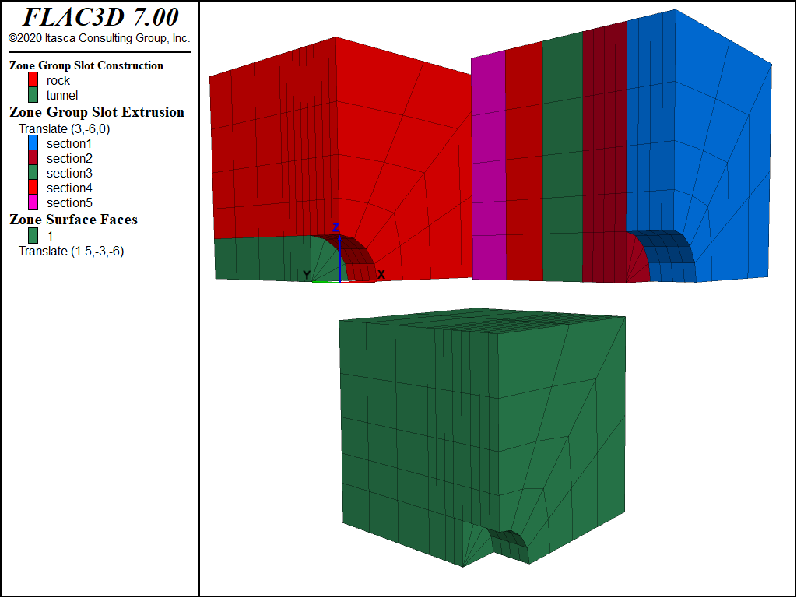
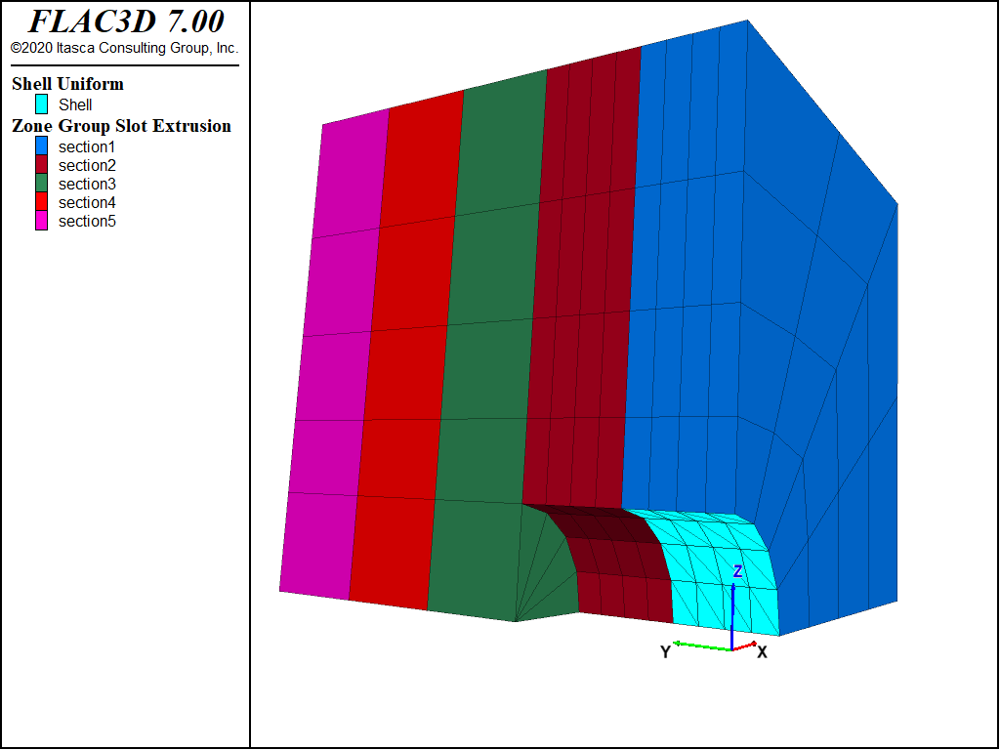
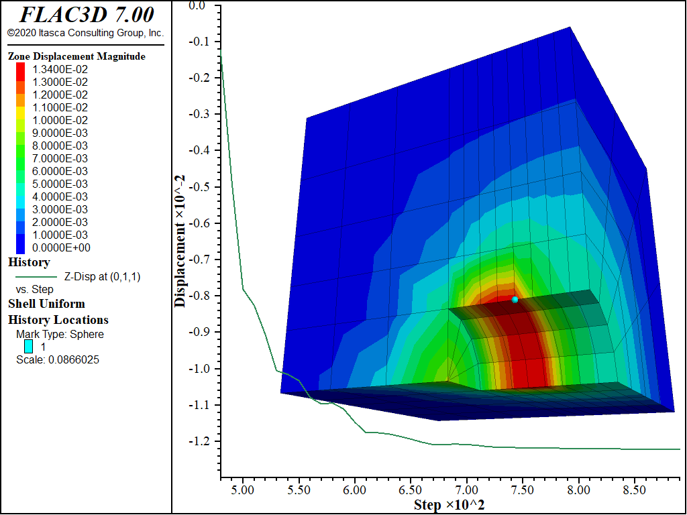
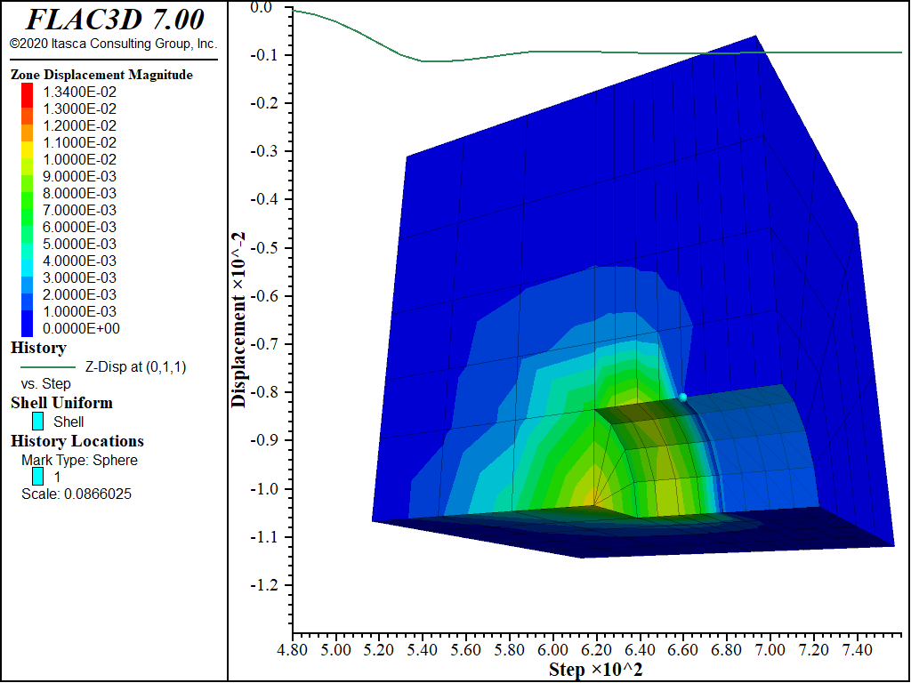
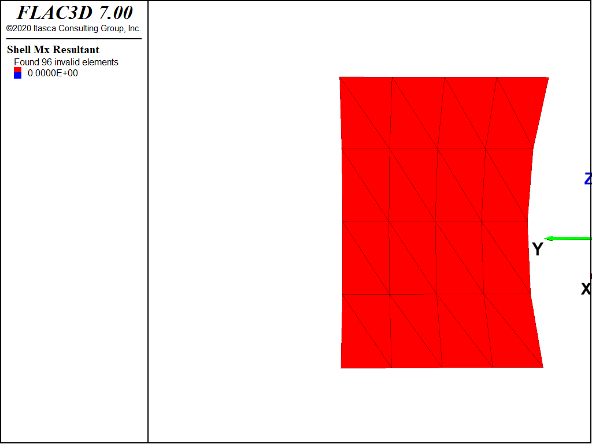
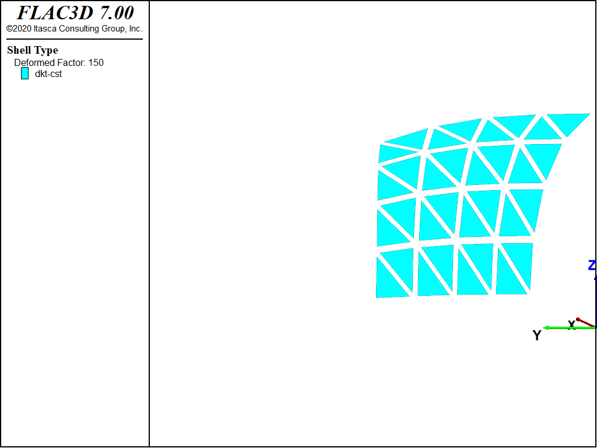
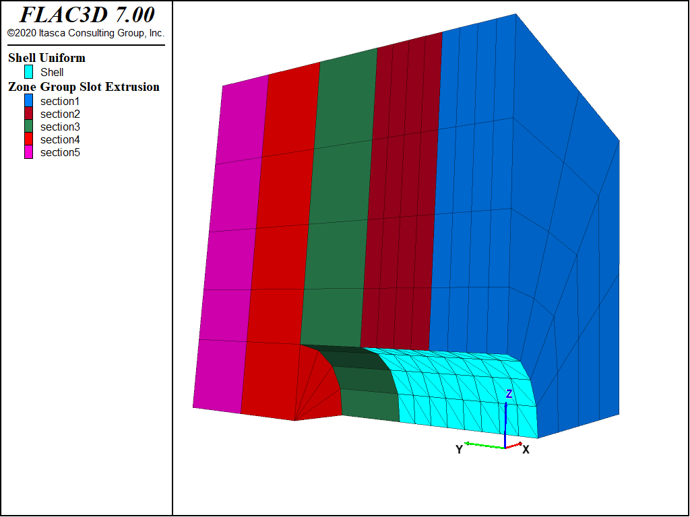
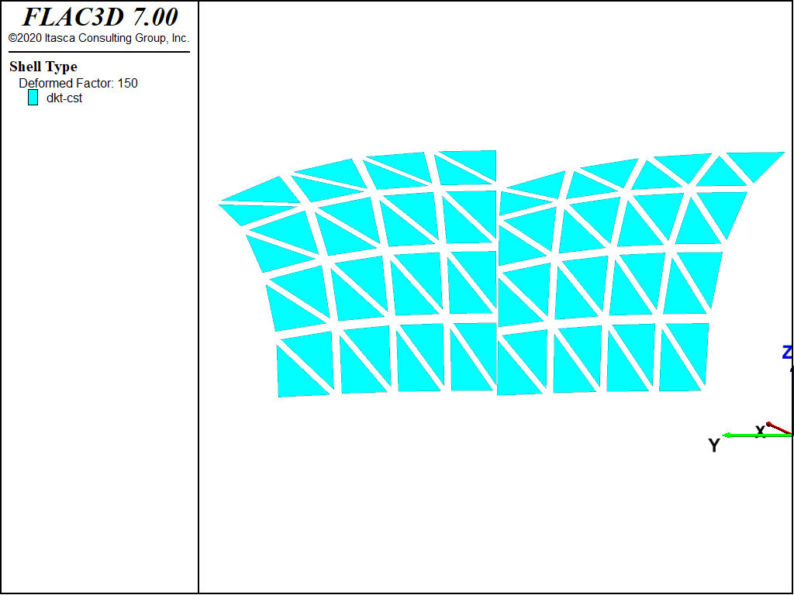
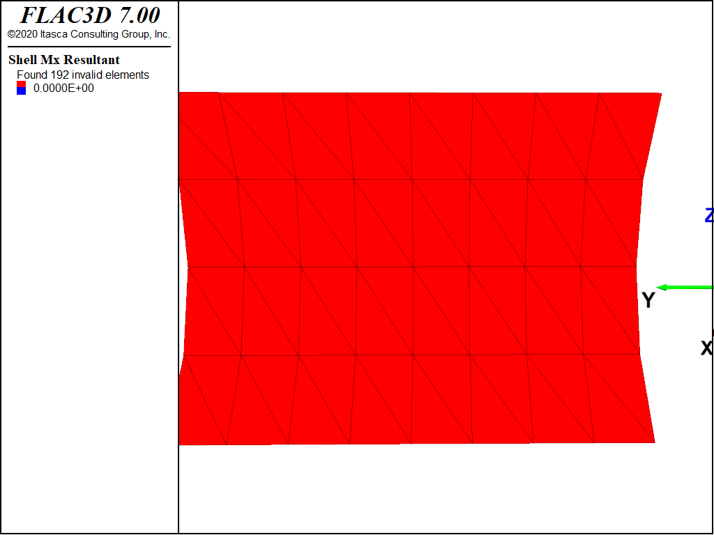

推进式衬砌隧道（与网格单元刚性连接）
问题描述
注意
要在 FLAC3D 中查看此工程，请使用菜单命令 。选择“Structure/Shell/AdvancingTunnel”，再选择“AdvancingTunnel.f3prj”即可加载。所使用的主数据文件（main data files）在本示例末尾给出。其余数据文件可在该工程中找到。
此示例演示如何模拟推进式隧道的开挖与支护添加的顺序作业。隧道为圆形断面，位于 5 m 深处的软弹性土体中（\(E\) = 48.2 MPa，\(\nu\) = 0.34），各向同性原位应力为 1 MPa。隧道由喷射混凝土支护（\(E\) = 10.5 GPa，\(\nu\) = 0.25），厚度 0.2 m。在整个模拟过程中喷射混凝土保持弹性并与土体刚性连接。（如果使用衬砌单元而非壳单元，则可允许喷射混凝土/土体接触面发生拉伸或剪切破坏，从而可形成间隙并发生滑移——参见推进式衬砌隧道（Advancing Lined Tunnel）。）
该模型的几何使用 Extruder 工具交互构建，并由状态记录导出为数据文件“geometry.dat”。图 1（Figure 1） 给出了生成的几何，以及使用 Extruder 工具和 zone face skin 命令赋予网格单元和单元面的分组名。


图 1：指定了网格单元和面名称的模型几何。
从总长 2 m 的初始隧道开始。为简单起见，假定开挖在两个隧道掌子面上同时推进；因此只需通过在三个对称平面上施加对称边界条件来模拟隧道的四分之一剖面。开挖过程通过将空模型赋给网格单元来模拟，随后允许应力重新分布。此时通过创建壳单元并使用 structure shell create by-face 命令将其附着到隧道表面来施作喷射混凝土。接着开挖下一段隧道，并再次允许应力重新分布。该阶段的模型如图 2（Figure 2）所示。可重复该开挖顺序以跟踪整个隧道施工过程。


图 2：阶段 2：在第 1 段安装喷射混凝土；开挖隧道第 2 段。
图 3（Figure 3）和图 4（Figure 4）分别给出了无支护情形和有支护情形在第二个开挖阶段发生的位移。各图中均包含隧道拱顶的 \(z\) 向位移时程。可以看出，支护将拱顶位移从约 12 mm 减小到 1 mm。


图 3：阶段 2 的位移——无支护。


图 4：阶段 2 的位移——喷射混凝土支护。
弯矩合力 \(M_x\)（其中 \(x\) 方向沿隧道轴线）见图 5（Figure 5）。可以看出，衬砌前端靠近隧道掌子面处的弯曲最为剧烈。图 6（Figure 6） 中衬砌的变形形状图表明，这种剧烈弯曲由较大的挤压变形引起。


图 5：第 2 阶段结束时的弯矩内力 \(M_x\)。


图 6：第 2 阶段结束时喷射混凝土的变形形状（放大 150 倍）。
又执行了一个开挖阶段。该阶段结束时的模型如图 图 7（Figure 7） 所示。通过再执行一次 structure shell create by-face 命令，喷射混凝土支护已延伸至隧道第 2 段，需注意默认会为所创建的单元指派新的 ID 号。这在两段喷射混凝土之间形成了“冷缝”。（沿该接触面将存在一组双节点：一个由第 1 段使用，另一个由第 2 段使用。相邻单元之间将不传递力和力矩；而只会在公共位置将力传递到周围网格单元中。这模拟了两个彼此相邻的独立壳单元段。）第 3 阶段中发生的变形开始加载新的壳单元段，并在先前的壳单元段中产生附加荷载。位移场（参见图 8（Figure 8））和弯曲应力场（参见图 9（Figure 9））在接缝处都是不连续的。


图 7：第 3 阶段：在第 2 段安装喷射混凝土；开挖隧道第 3 段。


图 8：第 3 阶段结束时喷射混凝土的变形形状（放大 150 倍）。


图 9：第 3 阶段结束时的弯矩内力 \(M_x\)。
数据文件
AdvancingTunnel.dat
model new
model large-strain off
model title 'Advancing Lined Tunnel (Rigidly Connected to Zones)'
; 创建简单网格单元几何体，在 Extruder 中交互生成
; 并从 State Record 导出
program call 'geometry' suppress
; 同时为模型网格单元和网格单元面指定组名。
zone generate from-extruder
zone face skin ; 标记模型边界
; 模型与参数
zone cmodel assign elastic
zone property bulk 50e6 shear 18e6
; 初始条件
zone initialize stress xx -1e6 yy -1e6 zz -1e6
; 边界条件 - 近端边界为滚轴，远端为固定。
zone face apply velocity-normal 0 range group 'West'
zone face apply velocity-normal 0 range group 'South'
zone face apply velocity-normal 0 range group 'Bottom'
zone face apply velocity (0,0,0) range group 'East' or 'North' or 'Top'
; --- 阶段 1：开挖第 1 段隧道
zone cmodel assign null range group 'section1' group 'tunnel'
model solve convergence 1
model save 'Stage1'
; 重置位移，记录顶拱闭合历史
zone gridpoint initialize displacement (0,0,0)
zone history displacement-z position (0,1,1)
; --- 阶段 2：开挖第 2 段隧道
zone cmodel assign null range group 'section2' group 'tunnel'
model save 'Stage2-start'
model solve convergence 1
model save 'Stage2-nosupport'
; -- 尝试带支护方案
model restore 'Stage2-start'
; --- 添加喷射混凝土，作用于第 1 段中的喷射混凝土面。
struct shell create by-zone-face group 'shotcrete1' ...
range group 'shotcrete' group 'section1'
struct shell property isotropic=(10.5e9, 0.25) thickness=0.2
; --- 结构单元边界条件
struct node fix velocity-x rotation-y rotation-z range position-x 0
; 对称条件
struct node fix velocity-y rotation-x rotation-z range position-y 0
struct node fix velocity-z rotation-x rotation-y range position-z 0
model solve convergence 1
model save 'Stage2-support'
; --- 阶段 3：开挖第 3 段隧道
zone cmodel assign null range group 'section3' group 'tunnel'
; --- 添加喷射混凝土，作用于第 1 段中的喷射混凝土面。
struct shell create by-zone-face group 'shotcrete2' ...
range group 'shotcrete' group 'section2'
struct shell property isotropic=(10.5e9, 0.25) thickness=0.2
; --- 结构单元边界条件
struct node fix velocity-x rotation-y rotation-z range position-x 0
; 对称条件
struct node fix velocity-y rotation-x rotation-z range position-y 0
struct node fix velocity-z rotation-x rotation-y range position-z 0
model solve convergence 1
model save 'Stage3-support'
| 这些内容对您有帮助吗？… | FLAC3D © 2019, Itasca | 原文更新于 2020 年 10 月 8 日 |